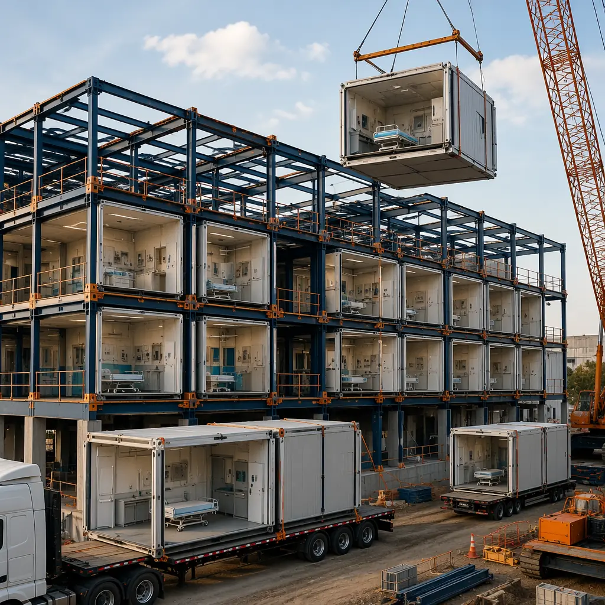
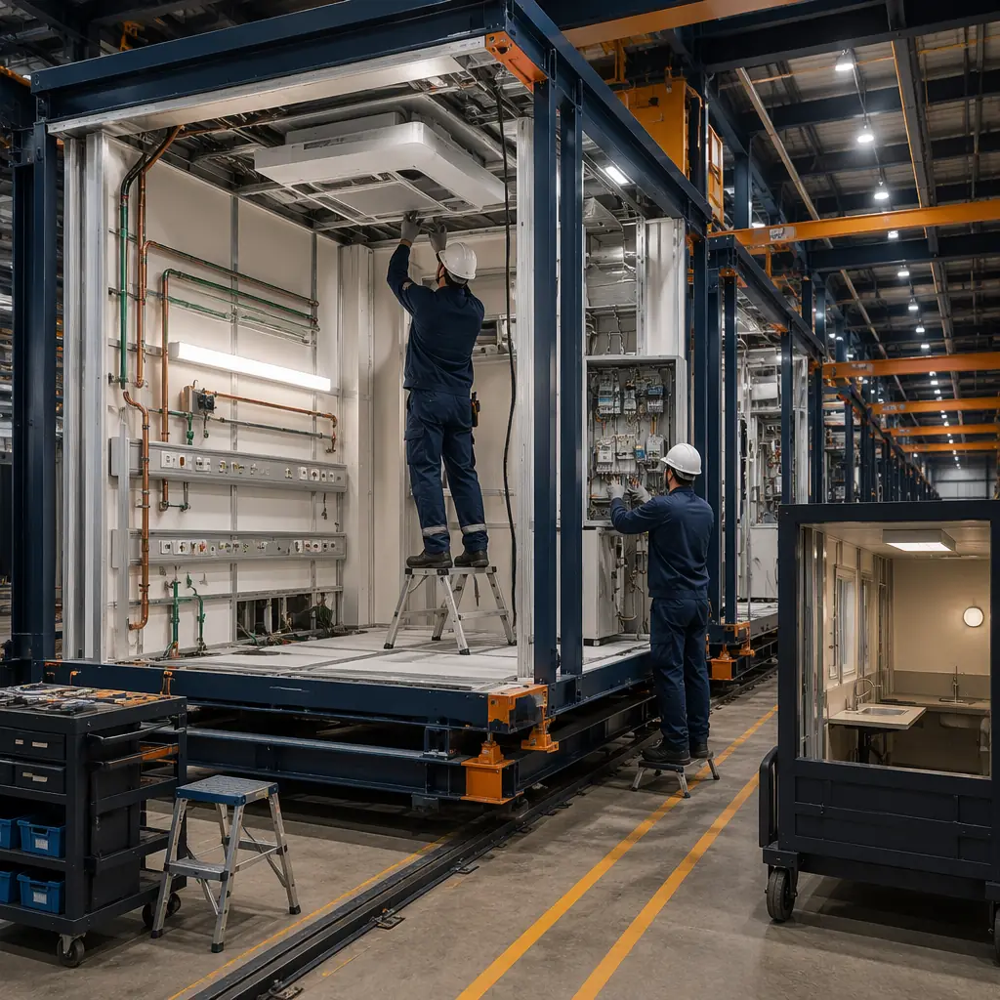

Hospital CFOs and healthcare developers face a budgeting challenge that commercial real estate investors never encounter: every line item in a hospital construction budget carries clinical consequences. Get the medical gas system wrong, and the Joint Commission denies occupancy. Underestimate ICRA costs, and construction-phase infection outbreaks add seven figures to the project. This article provides the line-item cost data that healthcare capital planners need to build an accurate modular hospital budget — from per-square-foot hard costs by department type to the financing and revenue-timing variables that determine whether modular delivers a 15% or 25% total project cost advantage over conventional construction.

Hard Cost Comparison: Modular vs Conventional Hospital Construction by Department
Hospital construction costs vary dramatically by department type. A medical-surgical patient floor shares almost nothing in cost structure with an operating theater suite — and treating them as a single average cost per square foot produces budgets that are wrong by 40–60% in either direction. Here is the 2026 cost data by department:
| Department Type | Modular Cost/sqft | Conventional Cost/sqft | Modular Savings |
|---|---|---|---|
| Operating Theaters (OR) | $580–$720 | $700–$900 | 17–20% |
| Intensive Care Units | $520–$650 | $620–$800 | 16–19% |
| Med-Surg Patient Floors | $380–$480 | $460–$600 | 17–20% |
| Imaging/Radiology | $620–$780 | $680–$850 | 8–12% |
| Emergency Department | $500–$620 | $580–$750 | 14–17% |
| Admin/Support Spaces | $280–$350 | $320–$420 | 12–17% |
These ranges reflect 2026 pricing for steel-framed modular construction with NFPA 99-compliant medical gas systems, FGI Guideline-compliant room dimensions, and factory-installed MEP systems. The cost advantage is largest in repetitive patient care spaces (med-surg, ICU) where the factory's production-line consistency eliminates the trade coordination waste that inflates conventional construction costs. Imaging departments show the smallest modular advantage because MRI and CT equipment shielding requirements are room-specific rather than module-repetitive, and the equipment itself — a $1.5M MRI magnet, for example — costs the same regardless of construction method.

The Costs That Disappear: ICRA, Weather Delays, and Trade Stacking
Hard cost comparisons capture only half the financial picture. The costs that modular construction eliminates entirely — costs that conventional hospital projects treat as unavoidable — often exceed the hard-cost savings by a factor of two or three.
ICRA containment costs: $0 vs $200–$400/sqft. When a hospital expands an existing campus, every square foot of construction zone adjacent to occupied patient areas requires ICRA Class IV containment: sealed barriers, negative air pressure, HEPA-filtered exhaust, and continuous particle monitoring. On a 50,000 sq ft hospital wing with 40% of the construction zone adjacent to active patient areas, ICRA costs alone add $4–$8 million. Modular construction eliminates this entirely: the modules are built in a factory 200 miles from the nearest patient, and the on-site assembly phase lasts 6–10 weeks instead of 18–36 months. See our article on modular hospital construction for the infection control analysis.
Weather delay contingency: 0–2% vs 8–15%. Conventional hospital construction budgets include an 8–15% weather contingency — $12–$22 million on a $150 million project. In modular construction, 80–90% of the building is assembled under a factory roof where weather does not exist as a variable. The remaining site work (foundation, module connection, MEP tie-in) still carries weather risk, but the contingency drops to 0–2% of the total project cost.
Trade stacking rework: near-zero vs 3–7%. On a conventional hospital site, the electrical contractor, plumbing contractor, medical gas contractor, HVAC contractor, and fire protection contractor all work in the same ceiling cavity — sequentially, because the space is too small for simultaneous work. When the HVAC duct blocks the medical gas pipe route, the medical gas contractor re-routes, and the hospital pays for the change order. In the modular factory, these systems are installed in a controlled sequence with digital twin coordination (see our BIM-to-factory digital workflow analysis), and the rework rate is below 0.5%. On a $150 million hospital project, that difference alone is worth $4–$10 million.
Financing Cost Impact: The Timeline Variable That Changes NPV by $15–25 Million
The single largest financial variable in hospital construction is not the cost per square foot — it is the construction timeline and the financing cost that accumulates during the pre-revenue period.
Consider a 150-bed community hospital with a $180 million total project budget:
| Cost Category | Modular (24 months) | Conventional (48 months) | Difference |
|---|---|---|---|
| Hard construction cost | $128M | $156M | -$28M |
| Construction loan interest (5.5%) | $7.0M | $17.2M | -$10.2M |
| ICRA containment | $0 | $5.5M | -$5.5M |
| Forgone patient revenue (2 years) | $0 | $360M | -$360M |
| Total project impact | $135M | $538.7M | -$403.7M |
The $360 million in additional patient revenue is the dominant variable — and it explains why hospital systems that evaluate modular purely on hard-cost comparison are missing the financial case entirely. For the detailed ROI methodology, see our modular construction ROI developer guide. For cost data across all building types, refer to our 2026 modular construction cost per square foot guide.
8 Cost Variables That Determine Your Modular Hospital Budget
Not every hospital project realizes the same cost advantage from modular construction. These eight variables determine whether your project saves 15% or 25%:
- Repetition ratio. How many identical room types does the project contain? A 200-bed hospital with 160 identical med-surg rooms achieves maximum factory efficiency. A 50-bed specialty hospital where every room is a different clinical program sees a smaller modular advantage. Projects with 30+ identical modules per type capture the full 20% hard-cost saving.
- Site access and logistics. Urban hospital campuses with constrained crane access, limited laydown area, or street-closure permitting requirements add $15–$30 per square foot to modular delivery costs. Suburban greenfield sites with unrestricted crane access add near-zero logistics premium.
- Factory distance. Module transport costs range from $2–$8 per mile per module depending on module size and escort requirements. Factories within 500 miles of the project site keep transport costs under 3% of module value; factories 1,500+ miles away can push transport to 8–12% and erode the modular cost advantage.
- Medical gas complexity. A med-surg floor with oxygen and medical air only costs $15–$25 per square foot for medical gas systems. An OR floor with 8 gas types (O2, MA, N2O, N2, surgical vacuum, WAGD, instrument air, CO2) costs $60–$90 per square foot. The modular advantage grows with gas complexity because factory installation is proportionally more efficient than field installation as system density increases.
- Seismic design category. Hospitals in Seismic Design Category D, E, or F (most of California, coastal Pacific Northwest, Alaska) require enhanced structural connections at module joints. This adds $25–$40 per square foot in both modular and conventional construction, but modular's factory-controlled steel fabrication partially offsets the premium. See our article on modular seismic design for the structural engineering data.
- Local labor market. In markets where skilled construction labor costs $85–$120 per hour (New York, San Francisco, Boston), modular's factory labor rate of $45–$65 per hour delivers a larger percentage saving. In markets with $40–$55 per hour site labor rates, the modular labor advantage narrows.
- Permitting jurisdiction. Some state health departments and local building departments have established modular hospital review pathways with 90–120 day approval timelines. Others treat modular hospital projects as novel and require 12–18 months of plan review — erasing much of the schedule advantage. Verify your jurisdiction's experience with modular healthcare projects before setting the project timeline.
- Equipment procurement timing. Hospital equipment with 12–18 month lead times (MRI, CT, linear accelerators) must be ordered at project start regardless of construction method. If the construction timeline compresses from 48 to 24 months but equipment lead times remain 18 months, the critical path shifts from construction to equipment delivery — and the modular schedule advantage is partially negated. Coordinate equipment procurement with the modular construction schedule from day one.
The Developer Checklist: 5 Numbers to Calculate Before Approaching a Modular Manufacturer
Before requesting modular hospital construction pricing, healthcare developers should calculate these five numbers. A manufacturer that cannot provide corresponding data for their specific system should be ruled out:
- Total project cost per bed. Divide the all-in project budget (hard costs + soft costs + financing + equipment) by the number of licensed beds. Modular hospital projects typically deliver $800,000–$1.2 million per bed; conventional projects run $1.0–$1.6 million per bed. This is the metric hospital boards understand.
- Months to first patient revenue. From groundbreaking to the day the first patient is admitted. Modular: 18–30 months. Conventional: 36–60 months. This is the metric hospital CFOs care about.
- ICRA cost per square foot of expansion zone. For campus expansion projects: how many square feet of the new construction zone are within 30 feet of occupied patient areas? Multiply by $200–$400 for the ICRA cost you will avoid with modular.
- Repetition count. How many modules of each room type? Projects with fewer than 10 modules of a given type should evaluate whether those rooms are better built conventionally within an otherwise modular project — a hybrid approach that captures modular savings where the repetition justifies it.
- Medical equipment lead time vs construction schedule. Map the longest-lead-time equipment items against the modular construction schedule. If equipment delivery is the critical path, adjust the construction start date so that the factory delivers modules when the equipment is ready for installation — not months before.
For hospital systems evaluating the broader modular construction decision, our comparison of modular versus traditional construction provides the schedule, cost, and quality framework. For the construction partner selection process, see our 10-point modular construction partner evaluation checklist.